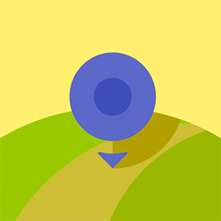

<div class="container-fluid navfix defaultBG">
	<div class="row">
		<div class="col-md-8 col-md-offset-2 col-xs-12 text-center">

			<span ng-show="showNoLoc">
				<h4>Sorry, we need your location before entering Kip</h4>
				
				<h5>
					We know privacy is important, so we understand :)
					<br>
			    	You can re-enable Location Sharing in your browser settings
				</h5>
				
				<br><br>
			</span>		

			<span ng-show="showCreateNew">
				
					
				<h4>Welcome to Kip</h4>
				<p >You're not inside any bubbles right now, <br>but there are some nearby! </p>
				<a href="/"><button class="btn btn-primary" ng-click="initGeo()"><span class="glyphicon glyphicon-refresh"></span> Refresh</button></a>
				<a href="/welcome"><button class="btn btn-default">What are bubbles?</button></a>


				<br><br>
			</span>
		
		</div>
	</div>
</div>